Born in the vibrant town of Ise-Ekiti (Ise/Orun LGA), Otunba Gbenga Lasore’s journey is defined by relentless ambition, intellectual rigor, and dedication to his roots. Now residing in Lagos, Nigeria, he seamlessly bridges the gap between grassroots values and global enterprise.
With over 20 years of extensive experience in the banking sector, Otunba Lasore has been instrumental in shaping financial strategies, cultivating robust economic portfolios, and driving institutional growth.
Laying the critical groundwork for infrastructural and developmental financing.
Driving retail and corporate banking growth across vast networks.
Spearheading strategic financial operations and client relations.
Cementing a legacy of robust financial stewardship and excellence.
As the Chairman and CEO of LAS Maritime & Shipping Company Ltd and Muyitok Nigeria Ltd, Otunba Lasore commands a vast and dynamic network of business interests.
Strategic investments and operations powering Nigeria's energy sector.
A premier Nigerian maritime executive ensuring seamless, world-class global shipping solutions.
Facilitating the robust export of high-quality goods from Nigeria to expanding markets in China, the United States, and Europe.
Empowering the next generation as the West African Representative of Bronte College, Canada.
Driving technology and retail distribution as a Major Distributor and Strategic Partner with Hisense China.
Moments captured from the life and times of Otunba Gbenga Lasore.
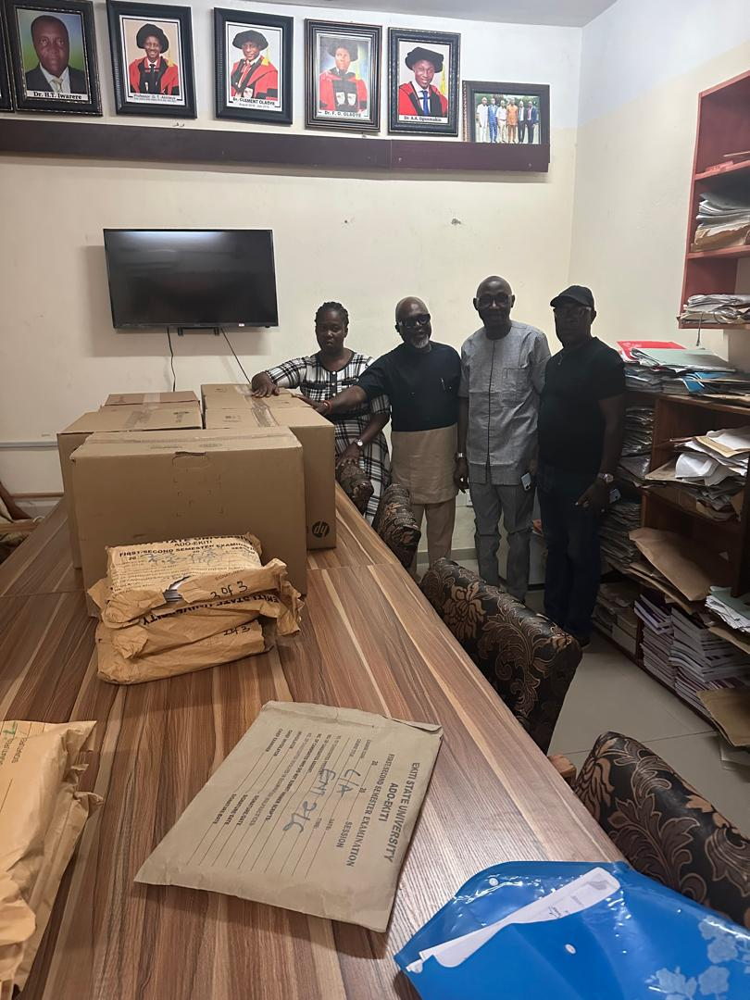
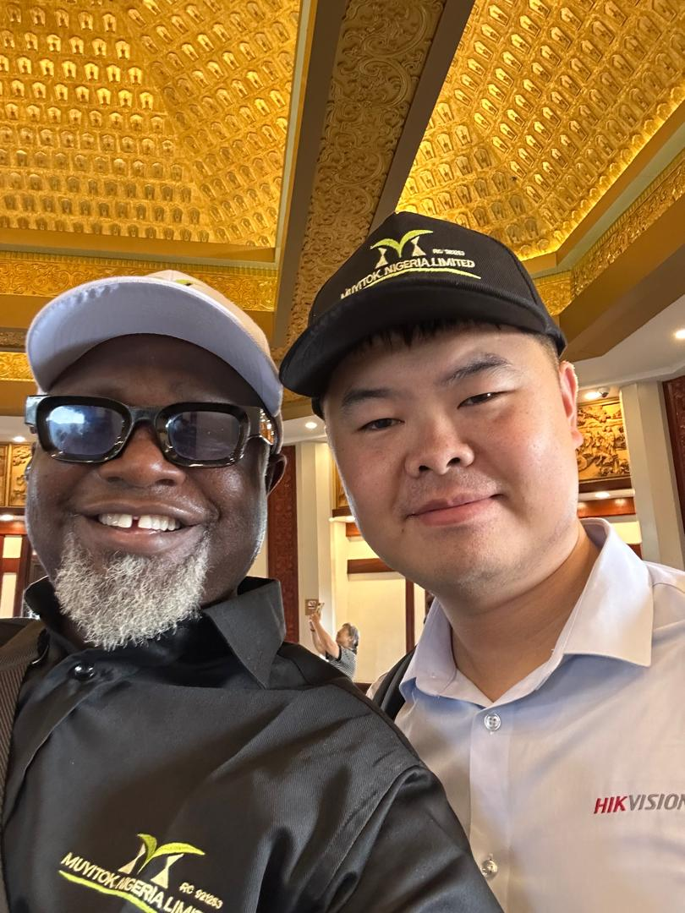
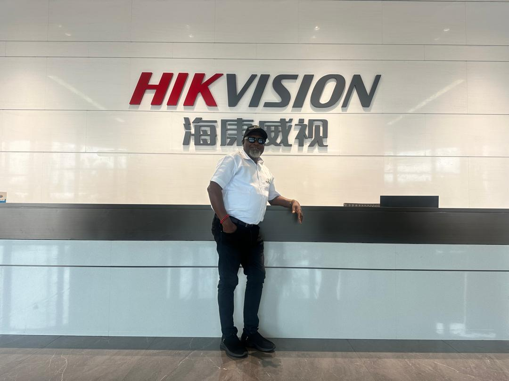
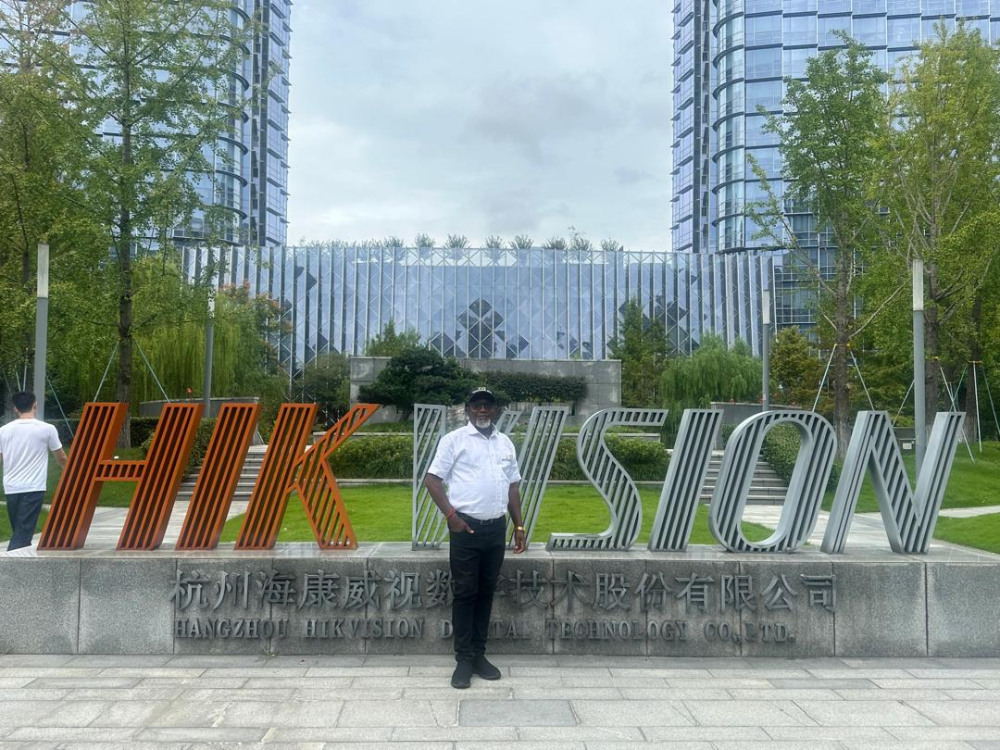
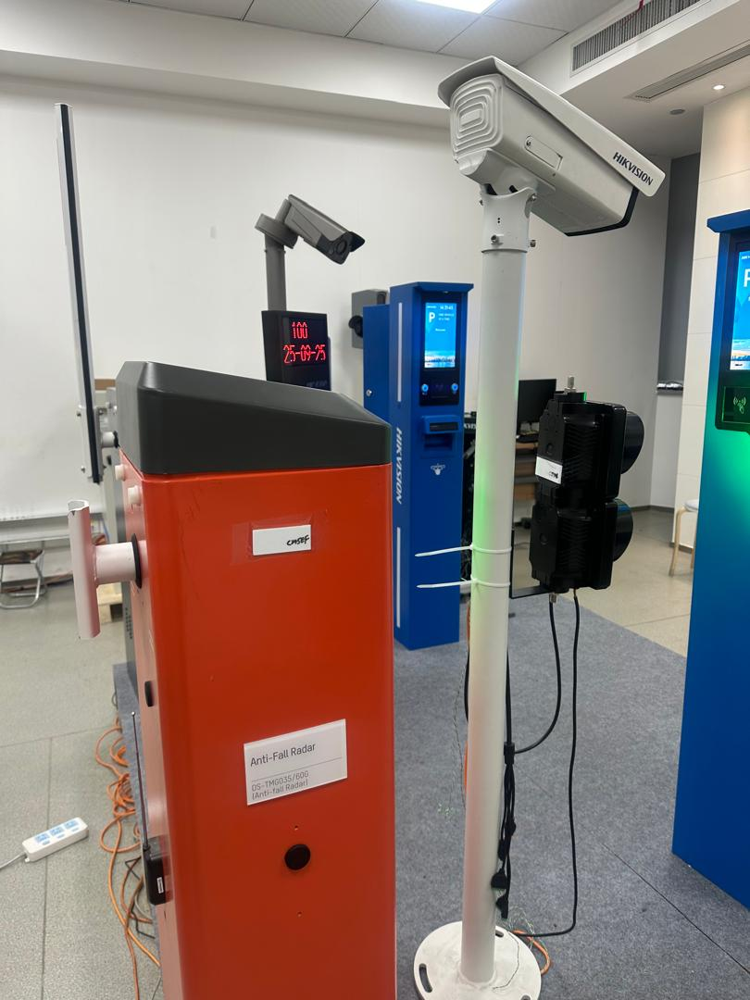
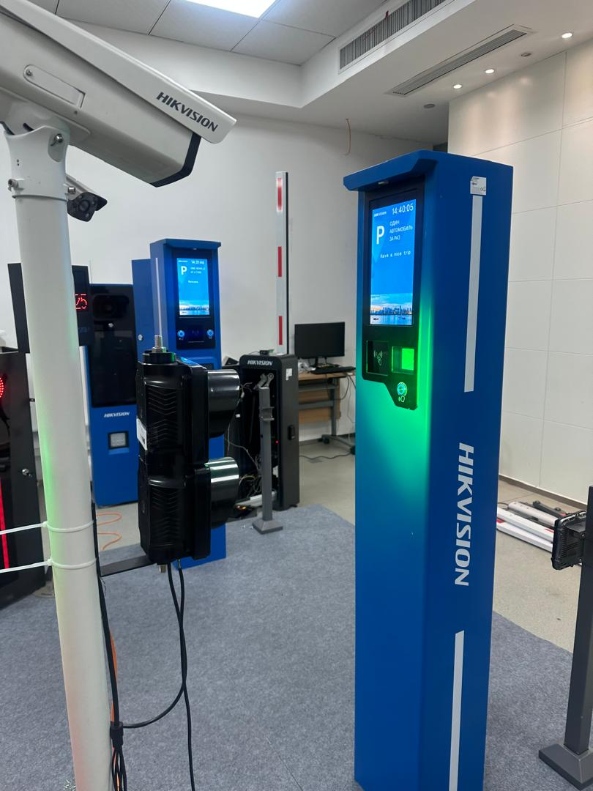
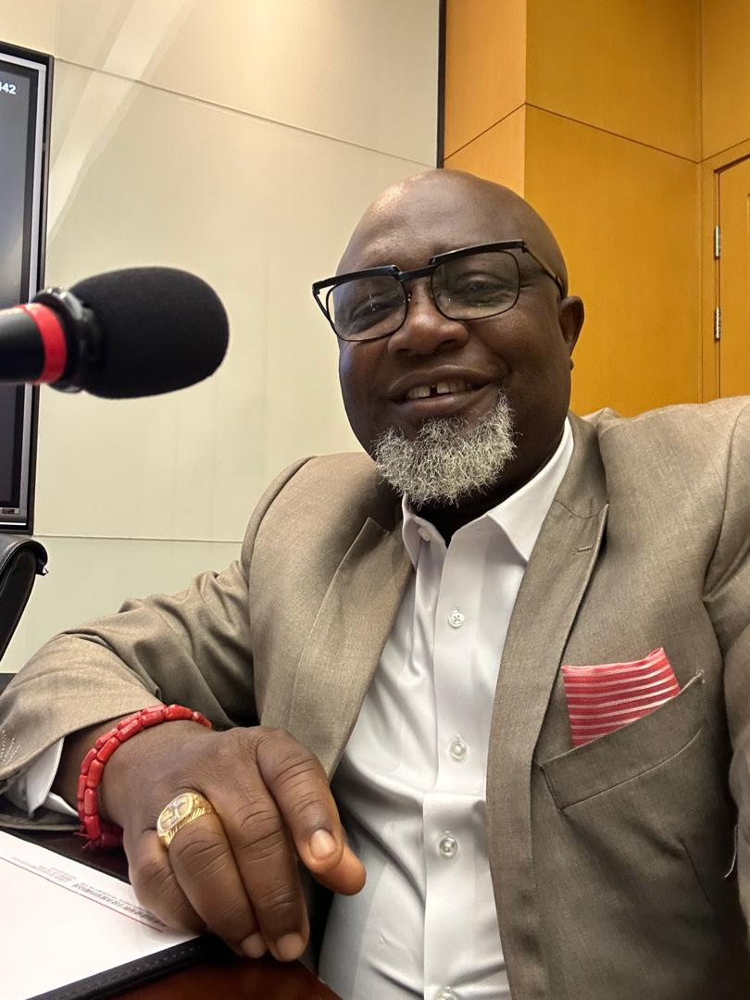
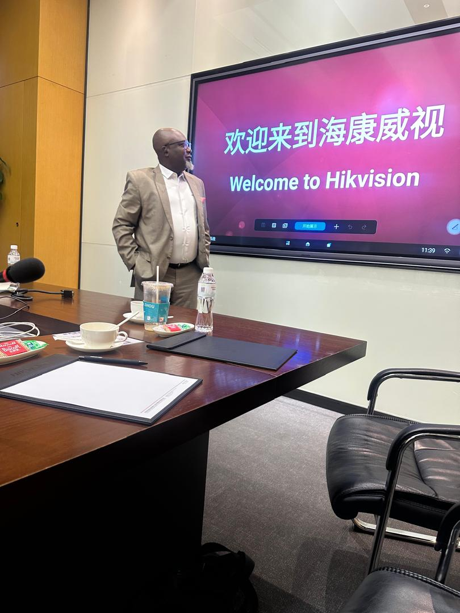
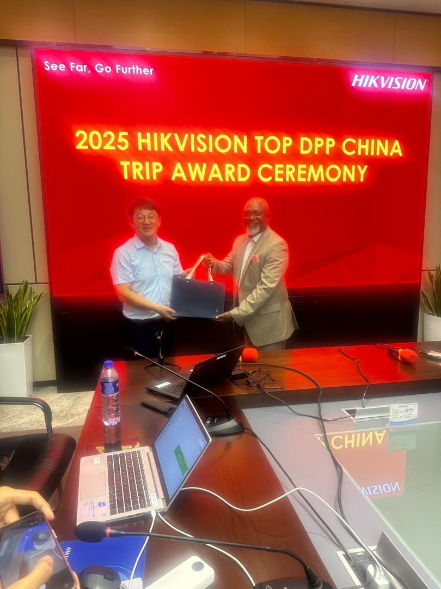
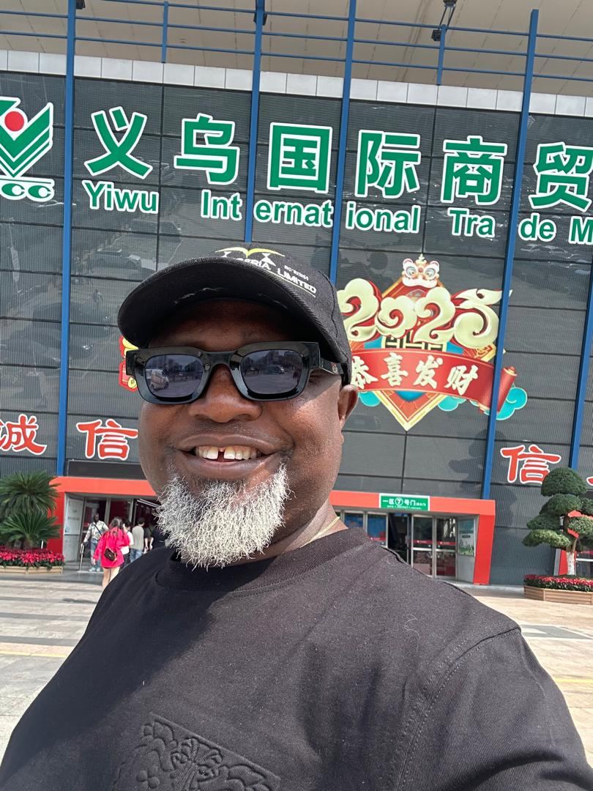
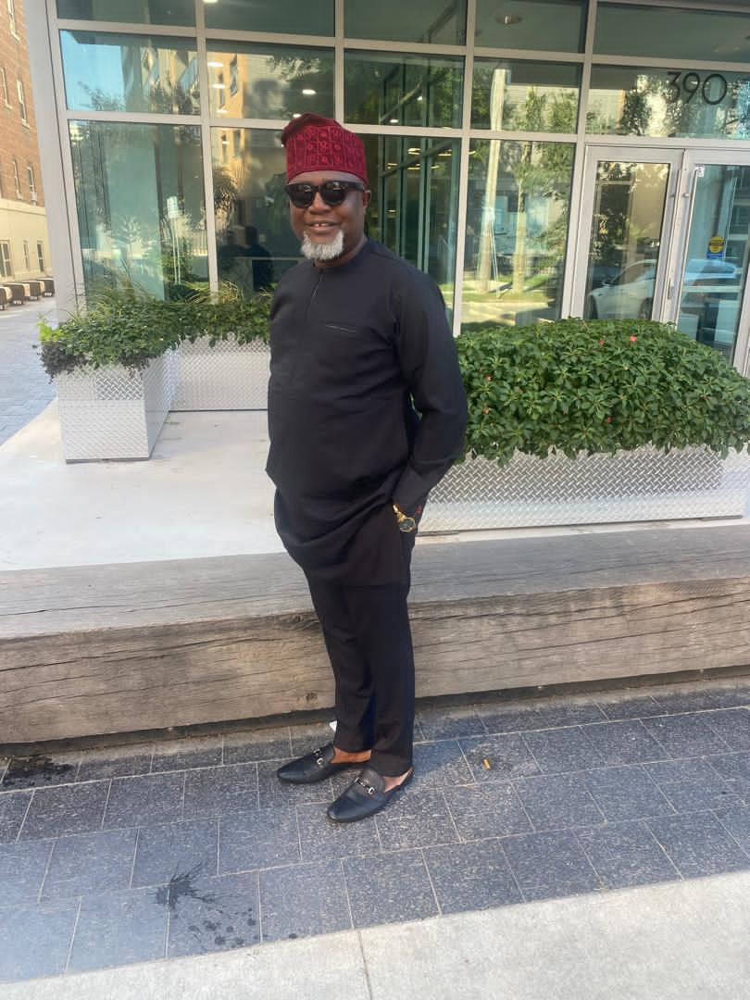
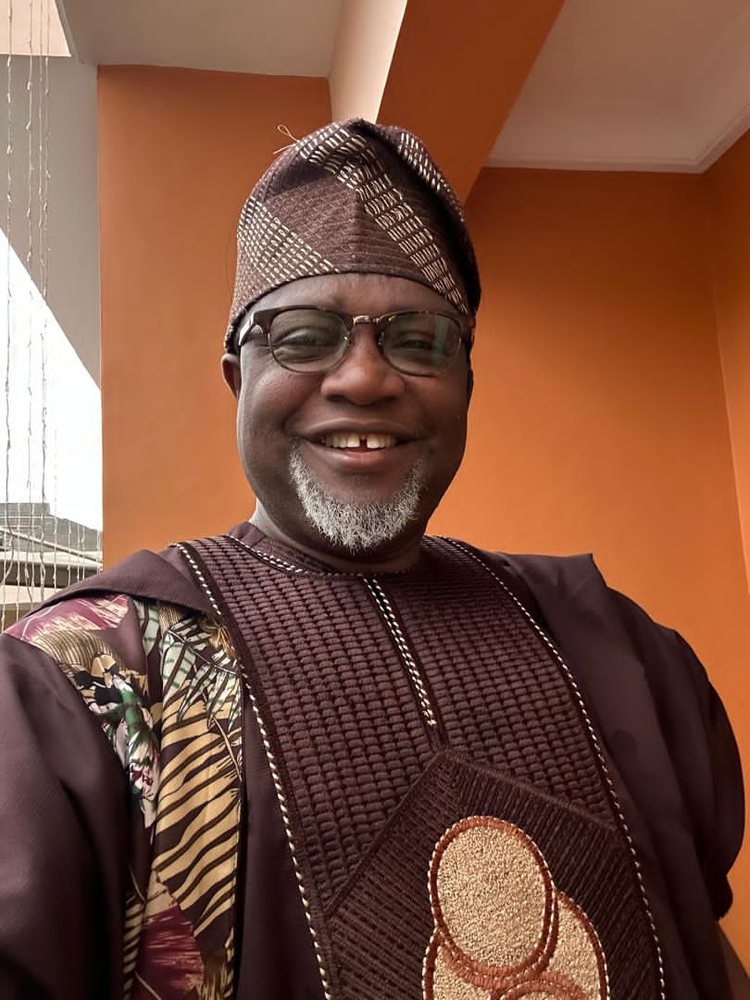
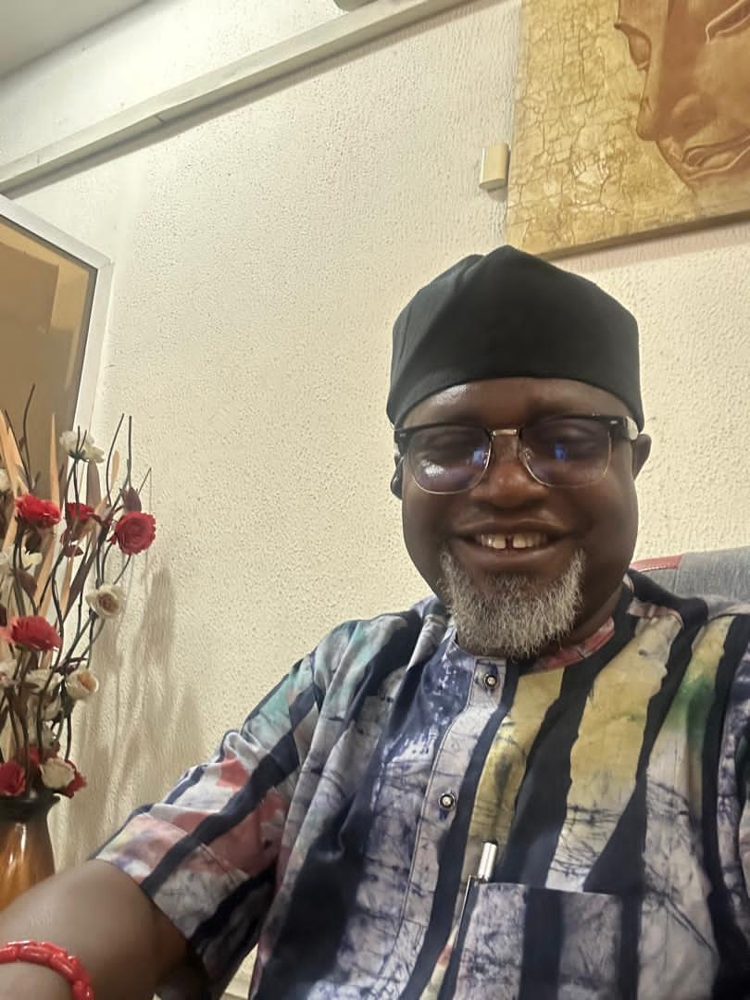
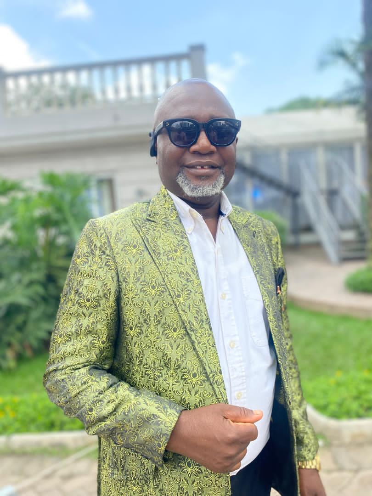
Beyond the boardroom, Otunba Lasore is a seasoned Lagos state politician profoundly committed to the socio-economic advancement of his people.
He leverages his extensive corporate acumen to formulate policies and champion initiatives that foster grassroots development in Lagos and Ekiti, ensuring a prosperous, sustainable future for all constituents.
Read about the vision and legacy of Otunba Gbenga Lasore in leading publications.